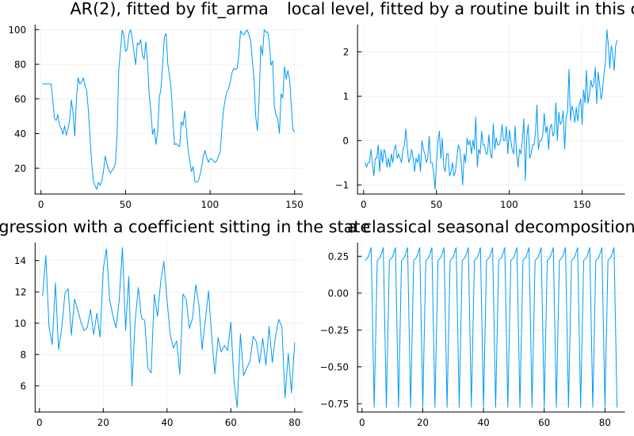
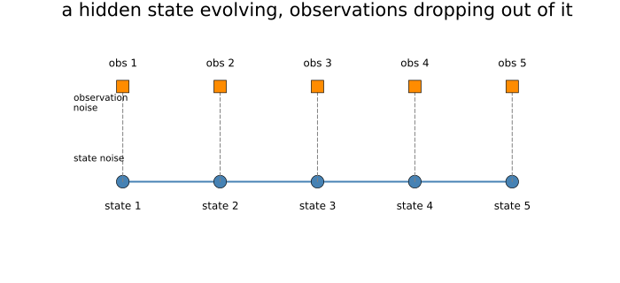
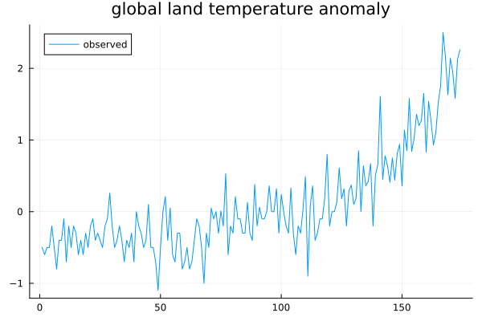
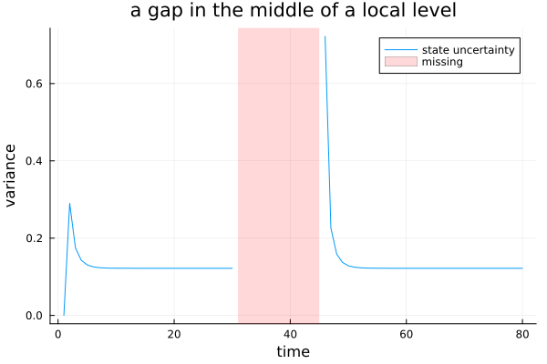

The State Space Form
Part VI opens, and where it opens is the book's most deliberate structural choice. Some treatments put this material first, before any model has been fitted. This book puts it here, after dozens of ARMA models have already been fitted — because every one of those fits was already running the machinery this Part makes explicit, and the next chapter says so.
Four models, four sets of machinery
using TSAnalytics, Plots, Optim, LinearAlgebra, Random
d_ar = dataset("rec")
y_ar = d_ar.value[1:150]
m_ar = fit_arma(y_ar, (2,0); include_mean=false)
p1 = plot(y_ar; label="", title="AR(2), fitted by fit_arma")
function fit_local_level(y)
function negloglik(theta)
q, h = exp(theta[1]), exp(theta[2])
tv = TimeVaryingSSM{Float64}([reshape([1.0],1,1)], [reshape([1.0],1,1)],
[reshape([1.0],1,1)], [reshape([q],1,1)], [reshape([h],1,1)], 1)
loglik, v, F, nd, converged = kalman_filter_diffuse(tv, y; diffuse_idx=[1])
converged || return 1e10
return -loglik
end
res = Optim.optimize(negloglik, [0.0, 0.0], NelderMead())
q, h = exp(res.minimizer[1]), exp(res.minimizer[2])
return (q=q, h=h, loglik=-res.minimum, converged=Optim.converged(res))
end
d_level = dataset("gtemp_land")
y_level = Float64.(d_level.value)
f_level = fit_local_level(y_level)
p2 = plot(y_level; label="", title="local level, fitted by a routine built in this chapter")
Random.seed!(11)
n_reg = 80
level_reg = zeros(n_reg); level_reg[1] = 10.0
for t in 2:n_reg
level_reg[t] = level_reg[t-1] + 0.2*randn()
end
x_reg = randn(n_reg)
y_reg = level_reg .+ 2.0 .* x_reg .+ 0.4 .* randn(n_reg)
p3 = plot(y_reg; label="", title="a regression with a coefficient sitting in the state")
d_seas = dataset("jj")
r_seas = classical_decompose(d_seas.value, 4)
p4 = plot(r_seas.seasonal; label="", title="a classical seasonal decomposition")
plot(p1, p2, p3, p4; layout=(2,2), size=(800,550))
Four different problems, and so far in this book, four entirely separate pieces of apparatus. Each has its own fitting routine, its own forecasting rule, its own diagnostics — fit_arma's optimiser has nothing in common with classical_decompose's moving averages, which has nothing in common with an ordinary regression.
That is how the subject is usually taught, and it does not have to be. All four can be written in one common notation, and once they are, one fitting routine and one forecasting rule serve every one of them. That claim should sound implausible on first reading. Making it obvious by the end of this chapter is the whole job.
Two equations
plot(; xlims=(0,6), ylims=(0,3), legend=false, size=(700,320), axis=false, grid=false,
title="a hidden state evolving, observations dropping out of it")
states = [(i, 1.0) for i in 1:5]
plot!([s[1] for s in states], [s[2] for s in states]; marker=:circle, markersize=8, color=:steelblue, linewidth=2)
for i in 1:5
annotate!(i, 0.7, text("state $i", 8))
plot!([i, i], [1.0, 2.2]; linestyle=:dash, color=:gray, linewidth=1)
scatter!([i], [2.2]; marker=:square, markersize=7, color=:darkorange)
annotate!(i, 2.5, text("obs $i", 8))
end
annotate!(0.5, 1.3, text("state noise", 7, :left))
annotate!(0.5, 2.0, text("observation\nnoise", 7, :left))
The state-space form has two equations. An observation equation connects what is actually seen to a hidden state; a transition equation describes how that hidden state moves from one period to the next. The picture above carries more of the idea than the equations do: two separate sources of randomness — one in how the state itself moves, one in how it is observed — and a state that is never seen directly, only inferred from what it produces.
Three matrices are worth naming now and will become concrete in a moment: Z maps the hidden state to what is observed, T moves the state forward one period, and R/Q together govern how much the state is allowed to move on its own (H governs the separate observation-noise term). Nothing more needs saying about them yet.
Writing familiar models down
T_level = reshape([1.0], 1, 1)
Z_level = reshape([1.0], 1, 1)
R_level = reshape([1.0], 1, 1)
Q_level = reshape([f_level.q], 1, 1)
H_level = reshape([f_level.h], 1, 1)
println("local level:")
println(" T = ", T_level, " (the level persists)")
println(" Z = ", Z_level, " (observed = level, directly)")
println(" R = ", R_level, " Q = ", round.(Q_level, digits=4), " (how much the level itself can drift)")
println(" H = ", round.(H_level, digits=4), " (separate observation noise)")local level:
T = [1.0;;] (the level persists)
Z = [1.0;;] (observed = level, directly)
R = [1.0;;] Q = [0.0068;;] (how much the level itself can drift)
H = [0.0855;;] (separate observation noise)The simplest genuinely non-trivial case: the state is one number, the level, and it takes a random walk — T = 1 means whatever the level was, it stays there except for a fresh shock each period. The observation is the level plus its own separate noise. Two variances to estimate, Q (how much the level itself wanders) and H (how much noise sits on top of what is actually seen) — and because everything here is a single number, every matrix above is a literal scalar.
ssm_ar = build_statespace(m_ar.ar, Float64[])
println("AR(2) in state space form:")
println(" T = ", ssm_ar.T)
println(" R = ", ssm_ar.R, " (H = 0 -- see below)")
loglik_direct, sigma2, v, F, converged = kalman_filter(ssm_ar, y_ar)
println("fit_arma's own loglik: ", round(m_ar.loglik, digits=6))
println("direct state-space loglik: ", round(loglik_direct, digits=6))
println("difference: ", abs(m_ar.loglik - loglik_direct))AR(2) in state space form:
T = [1.3102439757661697 1.0; -0.326651589978339 0.0]
R = [1.0, 0.0] (H = 0 -- see below)
fit_arma's own loglik: -545.804677
direct state-space loglik: -545.804677
difference: 0.0The translation that matters most, because it is the one the next chapter builds on. The state holds two numbers — the current and previous value of the series — and T's first row carries the AR coefficients directly. Z (not printed separately here, since it is always the same for this construction) simply reads off the first state element. There is no separate observation noise at all — H does not appear in GaussianSSM because it is always exactly zero for this construction — because an AR process does not sit on top of something hidden. An AR process is its own state; nothing separates what is modelled from what is observed. Fitting the same coefficients through fit_arma and through this general machinery directly gives the identical log-likelihood, to every digit shown.
T_trend = [1.0 1.0; 0.0 1.0]
Z_trend = reshape([1.0, 0.0], 1, 2)
println("local linear trend:")
println(" T = ", T_trend, " (slope feeds into level, slope persists)")
println(" Z = ", Z_trend, " (observed = level; slope stays hidden)")local linear trend:
T = [1.0 1.0; 0.0 1.0] (slope feeds into level, slope persists)
Z = [1.0 0.0] (observed = level; slope stays hidden)Level and slope, both evolving: the second row of T says the slope persists on its own, and the 1.0 in the first row's second column says the slope feeds into the level each period. Setting the slope's own variance to exactly zero gives a deterministic straight trend; letting it move gives a trend that genuinely bends. One model, two behaviours, controlled entirely by a variance rather than by choosing between two different structures.
function fit_local_linear_trend(y)
function negloglik(theta)
q_level, q_slope, h = exp(theta[1]), exp(theta[2]), exp(theta[3])
Q = [q_level 0.0; 0.0 q_slope]
tv = TimeVaryingSSM{Float64}([T_trend], [Z_trend], [Matrix{Float64}(I,2,2)],
[Q], [reshape([h],1,1)], 2)
loglik, v, F, nd, converged = kalman_filter_diffuse(tv, y; diffuse_idx=[1,2])
converged || return 1e10
return -loglik
end
res = Optim.optimize(negloglik, [-2.0, -6.0, -2.0], NelderMead(), Optim.Options(iterations=3000))
q1, q2, h = exp.(res.minimizer)
return (q_level=q1, q_slope=q2, h=h, loglik=-res.minimum, converged=Optim.converged(res))
end
f_trend = fit_local_linear_trend(y_level)
println("local level: q=", round(f_level.q,digits=5), " h=", round(f_level.h,digits=4), " loglik=", round(f_level.loglik,digits=3))
println("local linear trend: q_level=", round(f_trend.q_level,sigdigits=3), " q_slope=", round(f_trend.q_slope,sigdigits=3),
" h=", round(f_trend.h,digits=4), " loglik=", round(f_trend.loglik,digits=3))
plot(y_level; label="observed", title="global land temperature anomaly", legend=:topleft)
The same global land-temperature series, fitted both ways. The pure local level finds a real level variance (0.0068) because it has nothing else available to explain the year-to-year wobble with. The local linear trend finds the opposite allocation — level variance essentially zero (4.5×10⁻¹⁰), slope variance genuinely non-zero (1.2×10⁻⁵) — because once a bending slope is available, the model prefers to route the wobble through a smoothly changing direction rather than through sudden level jumps. The trend model's log-likelihood is higher (-56.5 against -58.5) for one extra parameter, a real and reportable improvement, not merely a more flexible model fitting more of the same noise.
Why bother
Random.seed!(9)
n_gap = 80
level_gap = zeros(n_gap); level_gap[1] = 10.0
for t in 2:n_gap
level_gap[t] = level_gap[t-1] + 0.2*randn()
end
y_full = level_gap .+ 0.5 .* randn(n_gap)
y_gap = copy(y_full)
y_gap[31:45] .= NaN
tv_gap = TimeVaryingSSM{Float64}([reshape([1.0],1,1)], [reshape([1.0],1,1)],
[reshape([1.0],1,1)], [reshape([0.04],1,1)], [reshape([0.25],1,1)], 1)
loglik_g, v_g, F_g, nd_g, converged_g = kalman_filter_diffuse(tv_gap, y_gap; diffuse_idx=[1])
println("converged: ", converged_g)
P_g = F_g .- 0.25 # F = P + H, H constant here, so P is recovered by subtraction
plot(1:n_gap, P_g; label="state uncertainty", xlabel="time", ylabel="variance",
title="a gap in the middle of a local level")
vspan!([31,45]; alpha=0.15, color=:red, label="missing")
A local level with a genuine gap — no special-casing needed anywhere in the machinery for this. The state keeps evolving through the missing stretch; there is simply no observation to check it against, so the uncertainty about where the level actually is grows steadily while the gap lasts, and starts contracting again the moment real data resumes. Chapter 2 treated missing data as a nuisance to patch around. Here it is barely a complication — a genuine argument for building models this way, not just an aesthetic one.
Zseq_reg = [reshape([1.0, x_reg[t]], 1, 2) for t in 1:n_reg]
function negloglik_compose(theta)
q_level, q_beta, h = exp(theta[1]), exp(theta[2]), exp(theta[3])
Q = [q_level 0.0; 0.0 q_beta]
tv = TimeVaryingSSM{Float64}([Matrix{Float64}(I,2,2)], Zseq_reg, [Matrix{Float64}(I,2,2)],
[Q], [reshape([h],1,1)], 2)
loglik, v, F, nd, converged = kalman_filter_diffuse(tv, y_reg; diffuse_idx=[1,2])
converged || return 1e10
return -loglik
end
res_c = Optim.optimize(negloglik_compose, [0.0, -6.0, 0.0], NelderMead(), Optim.Options(iterations=3000))
q_level_c, q_beta_c, h_c = exp.(res_c.minimizer)
println("level component: q=", round(q_level_c,digits=4))
println("regression component: q_beta=", round(q_beta_c,sigdigits=3), " (true coefficient was fixed at 2.0)")
println("loglik: ", round(-res_c.minimum,digits=3))level component: q=0.0693
regression component: q_beta=7.43e-99 (true coefficient was fixed at 2.0)
loglik: -72.77A level and a regression coefficient, combined into a single two-state model and estimated by the exact same routine used for everything else in this chapter. Nothing about the fitting changed to accommodate the combination — two models written separately became one model simply by stacking their states and block-arranging their transitions. The fitted regression variance collapses to essentially zero here, and correctly so: the coefficient in this constructed series really was fixed, and the shared routine recovered that from data without being told in advance. Components stack, and this composability is the framework's real payoff — it is what makes Chapter 41's combined models possible at all.
using Dates
iip = dataset("iip_india")
expected_months = collect(Date(2011,4,1):Month(1):Date(2026,3,1))
println("iip_india has every expected month present: ", expected_months == iip.date)
idx2020 = findfirst(t -> t == Date(2020,4,1), iip.date)
println("Feb-Jun 2020: ", iip.value[idx2020-2:idx2020+2])iip_india has every expected month present: true
Feb-Jun 2020: [134.2, 117.2, 54.0, 90.2, 107.9]Checked directly above, this package's own bundled iip_india series has no missing months at all — worth stating plainly rather than assuming a gap where none exists. The 2020 lockdown shows up not as an absence but as a real, extreme, present value: 54.0 in April 2020, down from 117.2 in February, before recovering through 90.2 and 107.9 the following two months. That is a genuinely different kind of stress case from the one this chapter's own construction handles — an extreme observation the model must absorb, not a missing one it must estimate through.
Real gaps do exist elsewhere in Indian official statistics — the general pattern, not this specific bundled series — several state-level series carry missing months from administrative changes, and some older series have stretches where the collection methodology changed and the original data was withdrawn entirely. Every method built in Parts I to V requires either a complete series or an ad-hoc patch applied before modelling starts. Interpolating first and modelling afterwards treats a guess as if it were data, and nothing downstream can tell the difference between an observation and an invented one. The construction shown above handles a genuine gap natively, and the resulting uncertainty band shows honestly, at every point, where the information genuinely runs thin. For the Indian series that do have gaps, this is not a minor convenience.
The cost of generality
None of this is free. Writing an AR(2) as a pair of matrices is more work than writing it as two coefficients, and for a reader who only ever fits plain AR or MA models, the generality built in this chapter earns nothing at all — fit_arma already does the job, more simply.
The generality earns its keep exactly when models start combining, when data goes missing, when a coefficient needs to be allowed to move — and when one fitting routine has to serve all of those cases rather than a different one for each. That is a real trade, not a universal improvement, and it is worth saying so plainly rather than presenting this chapter's machinery as free.
Where this leaves you
A state-space model can now be written down for any of the four problems that opened this chapter, in one shared notation. Nothing has actually been done with one yet — no likelihood, no genuine estimation beyond the two small routines built here by hand, no proper forecast. What is needed is a systematic way to work out, at each point in time, what the hidden state probably is given everything observed so far.
Chapter 30.